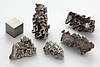

bismuth

Definition: Bismuth is a chemical element with the symbol Bi and atomic number 83. It is a post-transition metal and one of the pnictogens, with chemical properties resembling its lighter group 15 siblings arsenic and antimony. Elemental bismuth occurs naturally, and its sulfide and oxide forms are important commercial ores. The free element is 86% as dense as lead. It is a brittle metal with a silvery-white color when freshly produced. Surface oxidation generally gives samples of the metal a somewhat rosy cast. Further oxidation under heat can give bismuth a vividly iridescent appearance due to thin-film interference. Bismuth is both the most diamagnetic element and one of the least thermally conductive metals known.
Source: Wikipedia
Wikipedia Page (Something wrong with this association? Let us know.)
Wikidata Page (Something wrong with this association? Let us know.)